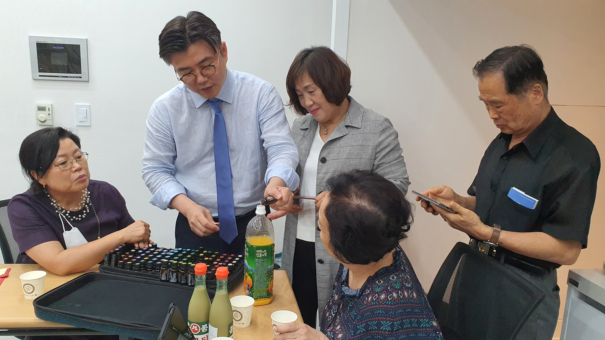
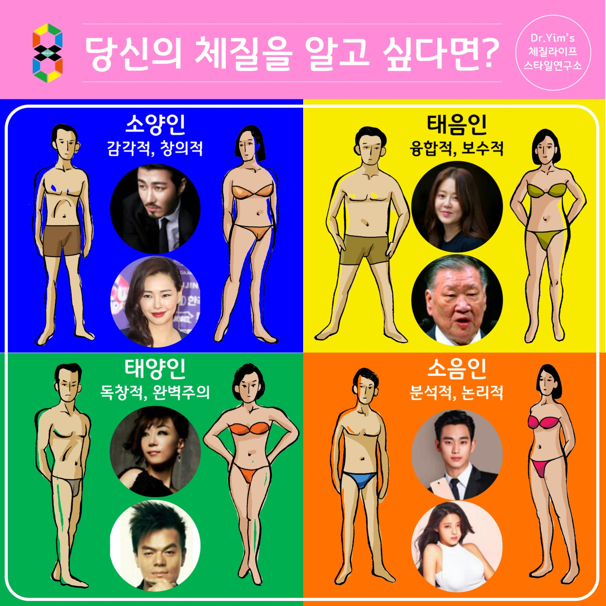
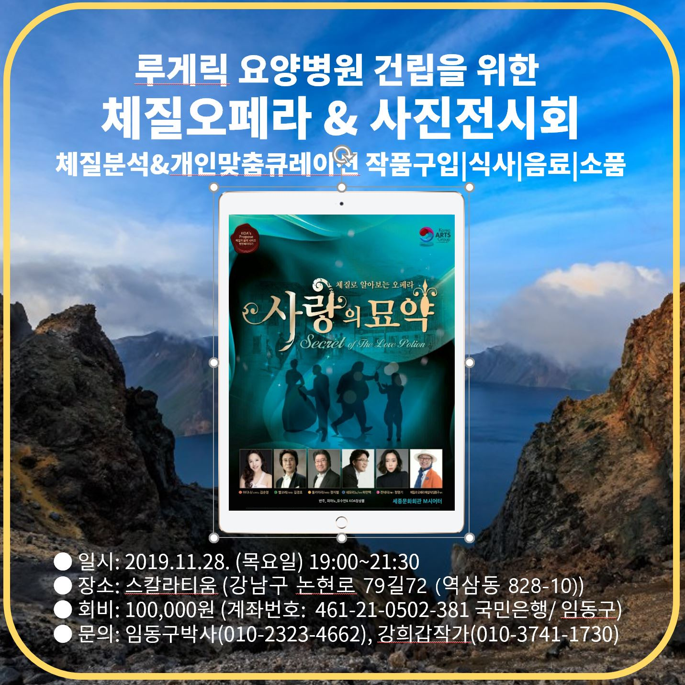
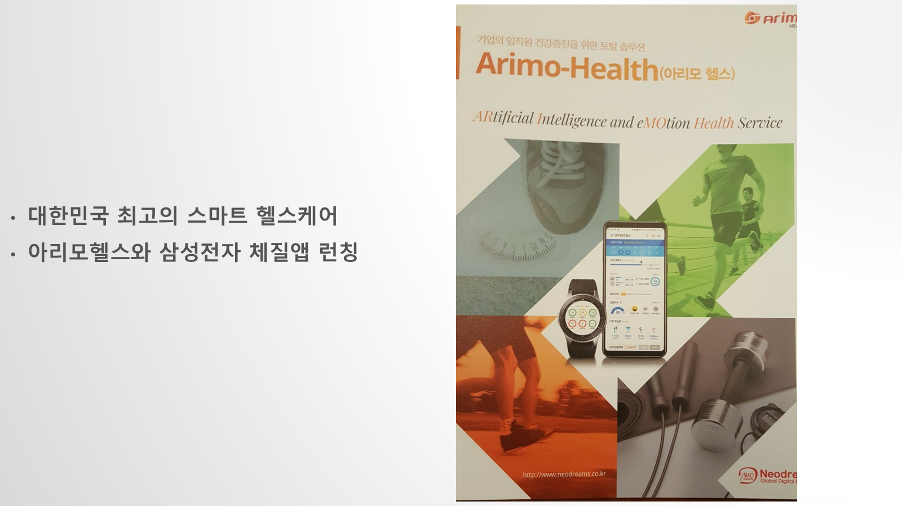
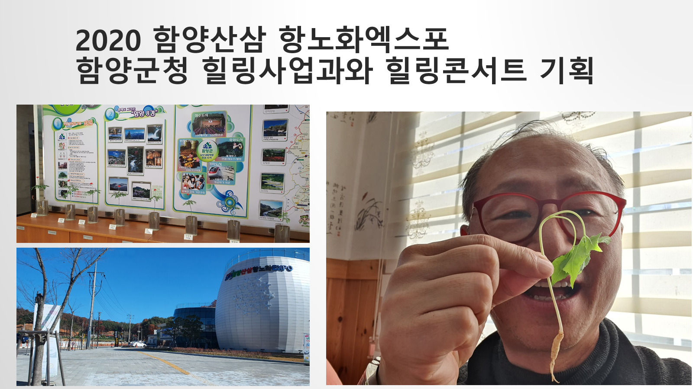
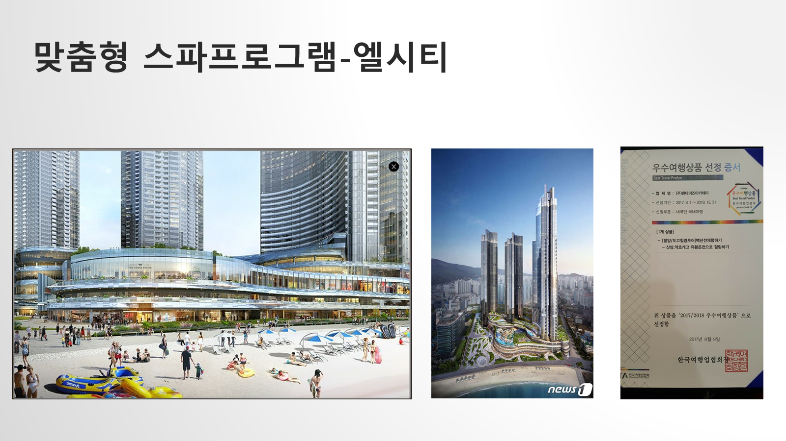
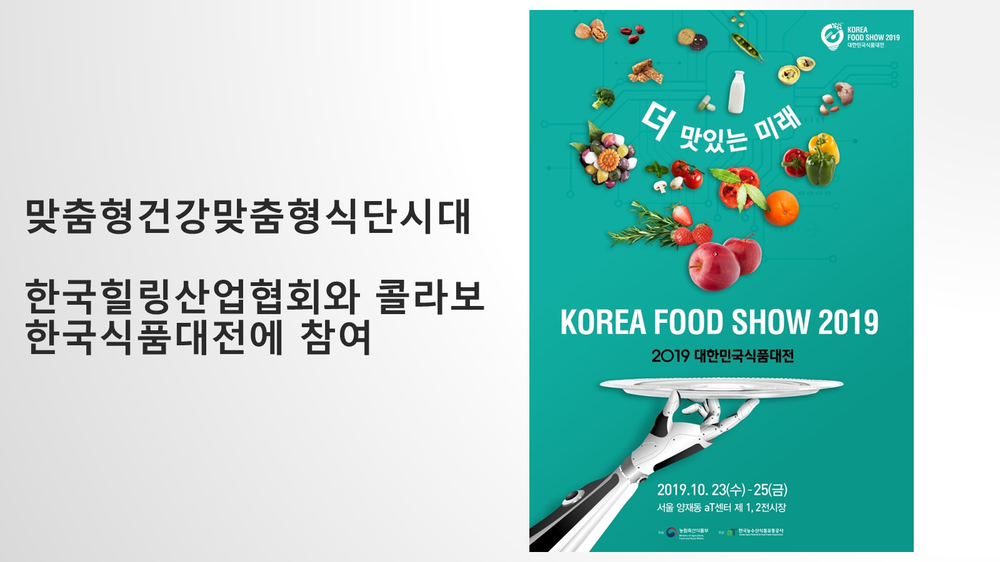
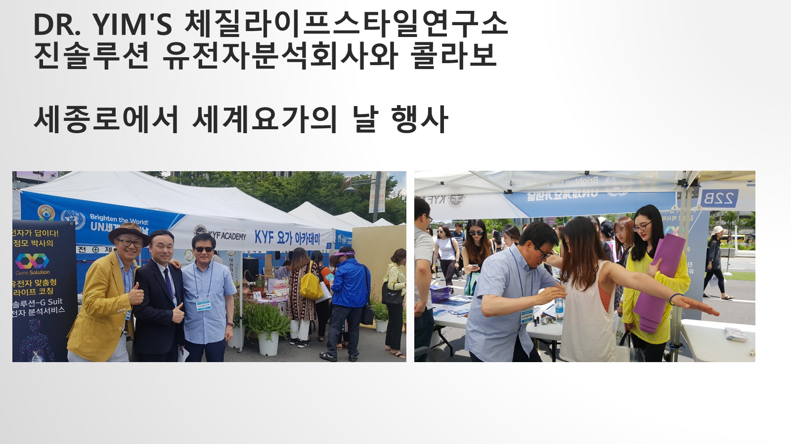
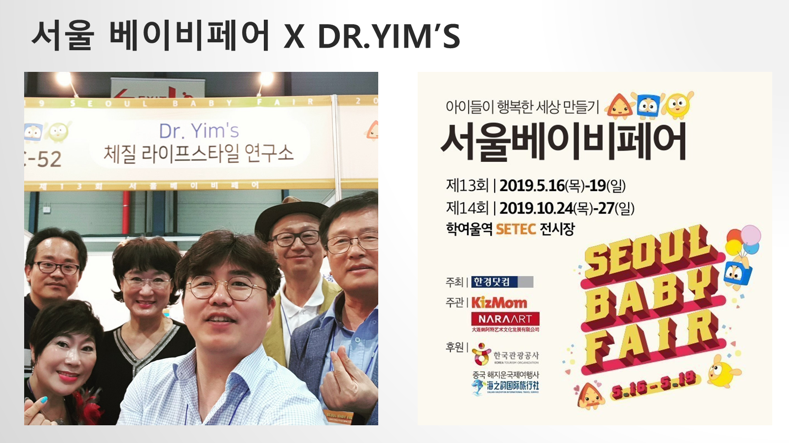

빛·향·소리 힐링명상
명상 그림과 에센셜오일, 소리·진동을 한 흐름으로 엮어 감각을 천천히 전환하는 25~30분형 집단 프로그램을 설계했습니다.
프로그램 기획프로그램 원형 KB-03339 →힐링페스타와 힐링페어에서는 체질진단·향·뷰티·푸드를 하나의 체험 동선으로 묶었고, 기업과 공공기관에서는 건강·소통·진로·회복을 대상에 맞춘 교육으로 운영했습니다.
힐링페스타·힐링페어를 먼저 보고, 이어서 최근 연도부터 기업교육·공공기관·박람회·관광·앱 협업을 살펴볼 수 있습니다. 각 기록에는 실제로 결합한 콘텐츠와 남아 있는 원형 근거를 함께 표시했습니다.
명상 그림과 에센셜오일, 소리·진동을 한 흐름으로 엮어 감각을 천천히 전환하는 25~30분형 집단 프로그램을 설계했습니다.
프로그램 기획프로그램 원형 KB-03339 →임동구의 체질진단·라이프스타일 큐레이션과 유정근의 ‘향기콘서트–이모셔널테라피’를 함께 구성했습니다. 체질·감정·향을 자기이해와 일상 회복의 경험으로 연결했습니다.
프로그램 원형임동구 체질진단 KB-03007 · 유정근 향기콘서트 KB-03006 →체질진단을 출발점으로 체질화장품·아로마·푸드·명상·DIY 체험을 한 동선에 묶었습니다. 2017 운영협약과 2018 체질관 기획, 2019 결과자료가 연속된 행사형 협업을 보여줍니다.
직접·복수근거힐링페어 프로그램 구성 KB-02766 →공항 조직의 교육 맥락에 체질별 소통, 생활습관 관찰, 건강 라이프스타일 실천을 조합한 맞춤형 강의 교안을 제작했습니다.
강의 산출물한국공항공사 교안 KB-02138 →임동구의 체질오페라와 유정근의 ‘향기로 치유하라’ 교육을 통해 체질별 소통과 감정 회복, 아로마 안전 사용을 조직교육 프로그램으로 구성했습니다.
강의 산출물체질오페라 KB-02066 · 향기교육 KB-02063 →인지어스 전직과정에 체질별 소통과 자기이해, 건강 라이프스타일을 접목해 직장인의 전환과 관계를 다루는 교육자료로 구성했습니다.
진행 기록현대모비스 강의자료 KB-02054 →수협 교육 현장에서 체질별 생활건강과 스트레스 회복을 다루고, 아로마를 일상에서 안전하게 활용하는 실습형 교육으로 확장했습니다.
강의 산출물향기 회복 교안 KB-01994 →취업 준비 과정의 긴장과 감정 상태를 향으로 돌아보고 회복 루틴을 찾는 ‘향기콘서트’를 박람회 부대행사로 제안·운영했습니다.
직접증빙확정 안내문 KB-03004 · 제안서 KB-01359고층 주거·리조트 공간의 고객경험에 체질스파, 향, 식음, 체질토크쇼를 결합하는 웰니스 프로그램을 설계했습니다.
프로그램 자료LCT 프로그램 KB-02955 →함양의 산삼·항노화 자원에 체질별 생활교육, 힐링콘서트, 지역 먹거리와 관광 동선을 연결한 체류형 콘텐츠를 제안했습니다.
프로그램 자료함양엑스포 자료 KB-03002 →오프라인 체질교육 뒤에도 사용자가 생활 선택을 이어가도록 스마트 헬스케어와 체질앱을 연결하는 운영 구상을 만들었습니다.
원형자료아리모헬스 자료 KB-02932 →설악산 교육원 환경에 체질상담, 음식, 움직임, 관계 코칭을 묶어 머무는 동안 반복 경험하는 상주형 힐링 프로그램으로 기획했습니다.
기획 기록원형 슬라이드 9 · KB-02956 →유정근의 강의계약과 연도별 교안은 체질을 건강정보에만 머물지 않고 자기이해·소통·인문학으로 확장한 공공기관 교육 사례를 보여줍니다.
직접증빙강의계약 KB-01364 · 교안 KB-01809식품 전시 현장에서 체질별 음식 선호와 식후 반응을 설명하고, 우리 농산물·메뉴·상담을 개인화 식사 경험으로 연결했습니다.
현장 기록원형 슬라이드 22 · KB-02956 →지역축제의 짧은 체류시간에 맞춰 체질 질문, 생활 팁, 향·식품 체험을 빠르게 순환하는 주민 참여형 프로그램으로 구성했습니다.
현장 기록원형 슬라이드 16 · KB-02956 →세계요가의 날 현장에서 유전자분석과 체질라이프 코칭을 함께 소개해 전통적 자기이해와 데이터 기반 개인화의 접점을 제시했습니다.
현장 기록원형 슬라이드 26 · KB-02956 →체질진단·라이프코칭을 중심으로 화장품 DIY, 아로마 향수, 유정근의 체질식사 상담, 체질차·기공·전통주·체질호떡까지 지역 기업과 함께 체험관으로 엮었습니다.
운영 원형체질체험관 소개서 KB-02728 →가족 구성원의 체질과 강점, 진로 관심을 함께 살피는 분석 리포트와 활동을 통해 부모·자녀의 차이를 대화의 언어로 바꿨습니다.
산출물 기록국내 활동 종합 원형 KB-02956 →오페라 등장인물과 음악의 감정선을 사상체질로 해석해 강연·갈라공연·관객 참여를 결합했습니다. 원형 연혁에는 2014 한국능률협회, 2015 한겨레신문, 2016 코리아아르츠그룹 공동기획 흐름이 기록돼 있습니다.
복수 원형자료체질오페라 강의자료 KB-00874 →삼성전자 힐링캠프와 가족캠프, 현대모비스 신입·전직 교육에서 체질진단, 건강습관, 관계·소통, 진로를 대상과 시간에 맞춰 모듈화했습니다.
반복 운영 기록체질콘텐츠 연혁·국내 종합자료 KB-02956 →국내 활동 레지스터는 로컬 원형자료 전체 검색 결과를 바탕으로 분기별 또는 요청 시 갱신합니다.
체질진단과 향기 상담이 사람을 만나는 장면, 지역 박람회의 체험형 구성, 오페라와 사상체질이 만난 공연 포스터, 기업·기관용 프로그램 산출물을 함께 보여줍니다.










건강, 조직소통, 고객경험, 지역상품 등 파트너의 목표를 먼저 정의합니다.
체질 경향과 현재 상태를 설명 가능한 질문과 관찰 기준으로 바꿉니다.
강의·진단·푸드·향·뷰티·공간 가운데 필요한 접점만 고릅니다.
강사, 동선, 안전, 개인정보, 안내문을 실제 고객 여정에 맞춥니다.
참여·만족·행동·재협업·안전 지표와 산출물을 포트폴리오에 남깁니다.
강의 한 회부터 앱·제품·공간·지역관광 공동개발까지 목적에 맞는 모듈을 함께 설계합니다.
공동연구, 원형자료 요청, 강의·교육, 제품·프로그램 공동개발과 국내외 파트너십을 제안해 주세요.